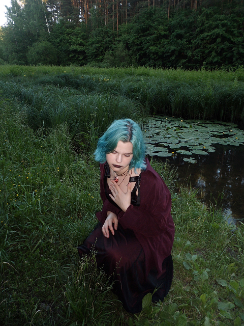

Даша
Графический дизайнер • Фотограф • Иллюстратор
1. Проверяемое использование AI-помощника
Инструмент: Google Gemini. Затраченное время: ~3 часа.
Задача: Проектирование модульной архитектуры Windows 95 по принципу Mobile First, реализация оконного менеджера, звукового движка и оцифровка 12 проектов из PDF-портфолио.
Существенный запрос: «Реализуй модульный интерфейс рабочего стола Windows 95 с экраном загрузки BIOS, звуками запуска и открытия файлов, перетаскиванием и ресайзом окон, сворачиванием в таскбар и адаптацией Mobile First».
Проверка и самостоятельные исправления студента:
- Реализован экран нажатия кнопки питания
⏻ Power Onперед стартом видео BIOS, чтобы обойти блокировку Autoplay со звуком в современных браузерах. - Добавлены 3-сторонние ресайзеры окон, нарезка реальных макетов портфолио и векторная иконка Figma.
2. Реализованный функционал на JavaScript
- Boot Screen & Audio Engine: Видео-загрузка BIOS с фоллбэк-эмулятором, звук запуска Windows 95 и звуки открытия папок/окон (MP3 + Web Audio API синтезатор) с кнопкой Mute в трее.
- Window Manager + Drag & Resize: Открытие, закрытие, сворачивание в панель задач, разворачивание во весь экран, перетаскивание и растягивание окон за края.
- Динамическая база и фильтрация: Фильтрация 12 кейсов по категориям и по клику на иконки софта в доке, лайтбокс галереи и копирование HEX-цветов палитры.